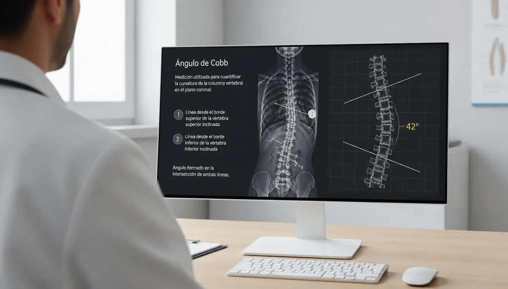

Valoración médica y el ángulo de Cobb
Cuando el examen físico sugiere la presencia de una desviación vertebral, el especialista en traumatología o rehabilitación pediátrica procede a realizar un diagnóstico clínico formal. La prueba de referencia para confirmar la escoliosis y medir su magnitud exacta es la radiografía panorámica de columna.
El cálculo del ángulo de Cobb
A través de la radiografía, el médico calcula el denominado ángulo de Cobb, que mide en grados la severidad de la curvatura lateral. Esta métrica es la que determina los pasos a seguir: desde una simple observación periódica en curvas leves hasta tratamientos específicos de fisioterapia o el uso de soportes ortopédicos en desviaciones mayores.
Confianza en el criterio médico especializado
Contar con un diagnóstico médico preciso disipa dudas y establece una hoja de ruta personalizada, adaptada al ritmo de maduración ósea del menor y a las características concretas de su columna.
"El ángulo de Cobb y la valoración traumatológica ofrecen el marco clínico exacto para definir el acompañamiento adecuado."
Afrontar el diagnóstico con seguridad y claridad
Entender las pruebas diagnósticas aporta tranquilidad a la familia, asegurando que cada decisión terapéutica esté respaldada por la ciencia médica.
➔ Volver al índice de Escoliosis Idiopática